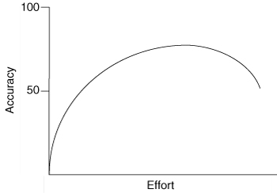

Agile Estimating
Success through uncertainty
The problem
&
the goal
The purpose of planning
Planning is everything. Plans are nothing.
Field Marshal Helmuth Graf von Moltke
Uncertainty
As work progresses, estimates become more certain.
What should we build?
It depends!
- Features
- Resources
- Schedule
What's planning
good for?
- Reduce risk
- Reduce uncertainty
- Make better decisions
- Establish trust
Reduce risk
- Learn more (e.g. work on a legacy system)
- Make it part of the estimate
Reduce uncertainty
Don't build the wrong product.
Work generates knowledge:
Bring it to Team and Product Owner.
Make better decisions
Project
- Fits into market window?
- Worth doing for the cost?
Staff
- Enough available?
- Right people available?
Tradeoffs
- Time vs cost
- Features vs time
Trust
Reliable estimates
- Reliable delivery
- Determine scope
Bad Plan
“I'll be done in 4 weeks!”
(now let me work!)
Informative Plan
baseline expectations
- Completion in 3-4 Sprints
- Features 1-5 will be completed in the first 2 Sprints
- Key assumptions are documented
- How we will measure progress collaboratively.
Stakeholder can infer the degree of confidence.
Good Plan
Reliable enough for stakeholders to make decisions.
Usefulness & correctness
Can incorrect plans be useful?
Refined Plan
- Day 0. Estimation: 6 Sprints
- Sprint 2. Estimation: 7 Sprints
As knowledge grows, the plan is refined.
The plan was incorrect, but useful.
Wrong Plan
- Day 0 - Estimation: 4 Sprints
- Sprint 4 - Estimation: 8 Sprints
Seriously underestimated. Never refined.
Grows to 200% at the last moment.
The plan was wrong. We are in trouble.
Why planning fails
No plan survives contact with the enemy.
Field Marshal Helmuth Graf von Moltke
Planning by activity instead of feature
- Customer value is in features
- Schedule review looks for forgotten activities
- Harder to look for missing features
Why?
- Activities don't finish early
- Lateness is passed down the schedule
- Activities are not independent
Activities don't finish early
If you finish early
- It looks like you overestimated
- Gives you oportunity to add unnecessary
bells-and-whistles
Parkinson's Law
Work expands so as to fill the time available for its completion.
Lateness is passed down the schedule
Testing will start late if anything goes worse than planned.
It will start early only if everything goes better than planned.
Activities are not independent
If writing a new Service Costs view takes 50% longer than expected:
- Will the other views also take extra time?
- Will the other views take less time, so the mistake will balance out?
Probably 1.
- The task was more complex than expected.
- It was more difficult to test it.
Multitasking causes more delays
Effect of multitasking on productivity.
Multitasking
2 tasks
Blocked on A → Work on B.
>2 tasks
- Work remains in progress longer
- Cookie licking
- Task switching overhead
- Favours developer overload
Overload
100% load: no margin to cope with uncertainty.
Features not developed by priority
Wishful thinking
If all work will be completed,
customers don't care about the sequence.
Reality
Projects have an inherent uncertainty.
- Reduce the scope
- Drop features
Ignoring uncertainty
Common (wrong) assumptions:
Users will never
- Change their minds
- Refine their opinions
- Come up with new needs
We will always
- Identify ahead every activity
- Foresee every shortcoming
- Complete every task on time
Iterate
- Work in iterations.
- Demo early and often.
- Revise the plan when needed.
Identifying the shortcomings early and revising the plan reduces uncertainty.
- Missing tasks can be added to plans.
- Bad estimates can be corrected.
Focus on plan → Focus on planning
Estimates become commitments
An estimate is a probability
Will the Service Costs be completed
by the end of the day?
- Asked on September 24 2012: 0%
- Asked on September 24 2022: 100%
estimate ≠ commitment
Agile Planning
A good plan violently executed now is better
than a perfect plan executed next week.
General George S. Patton
Agile values
- Individuals and interactions > processes and tools
- Customer collaboration > contract negotiation
- Responding to change > following a plan
Individuals & interactions
A well-functioning team
of great individuals
with mediocre tools
outperforms
a dysfunctional team
of mediocre individuals
with great tools and processes.
Processes and tools cannot compensate
for a poor team.
Check!
We have a great team.
We work on improving continuously.
We must keep up the good work.
Customer collaboration
All parties to the project work toward the same goals.
Contract negotiation
Contracts are often necessary.
However:
- Contract's terms and details determine if the parties collaborate or compete.
- Contract negotiation sets the development team and the project customer at odds right from the start.
Responding to change
Ultimate focus: delivering as much value as possible.
- It is impossible to know every detail of every feature the customer wants.
- It is inevitable that users will come up with new ideas.
- It is inevitable that users will change their minds on the priorities.
Agile plan
One view of the future
A plan is one view of the future, but many views are possible.
As a team gains knowledge and experience, they will factor them into the plan.
Agile approach
- Work as one
- Work in short iterations
- Deliver something each iteration
- Focus on business priorities
- Inspect and adapt
Work As One
No room to “throw over the wall”
- Analysts do not throw requirements over the wall to designers.
- Designers and architects do not throw designs over a wall to coders.
- Coders do not throw half-tested code over a wall to testers.
We’re all in this together
Work in Short Iterations
No grand delineation of phases
- Very short initial design / modeling phase
- All work happens concurrently
(analysis, design, coding, testing...)
Iterations are timeboxed
Iterations finish on time
even if functionality is dropped.
Deliver Something Each Iteration
- The Team makes progress by adding one or more small features in each iteration.
- Each added feature is coded, tested, and of releaseable quality.
- Customers see the results early.
- The plan can be refined early and often.
Focus on Business Priorities
- Team: delivers features in the order specified by the product owner.
- Product Owner: prioritizes the features to optimize ROI.
- Features must be written so as to minimize the technical dependencies among them.
Focus
The team focuses on delivering user-valued features rather than on completing isolated tasks.
User Stories
- Requirements are refined as the work progresses
- To each user story follow as many conversations between the developers and the product owner as needed.
- Conversations as often as needed
- Include whoever is necessary
(Product, Architecture, Operations...)
- Focus: written → spoken.
Inspect and Adapt
The plan created at the start of any project is not a guarantee of what will happen.
- Personnel may come or go
- Technologies will work better / worse
- Users will change their minds
- Competitors may force us to respond faster
- ...
Change is
Opportunity and need to update the plan
to better reflect the reality.
Traditional vs Agile
Traditional
Run 10km.
Agile
Run as far as possible
until the end of the Sprint.
Agile planning
Acknowledge uncertainty
The result is somewhat unknown,
and unknowable in advance.
Revise
Planning means setting and revising goals
that lead to a longer-term objective.
Levels of planning

Agile teams plan at least at the release,
iteration, and day levels.
Conditions of Satisfaction
Start of release planning:
Team and Product Owner collaboratively explore the Product Owner’s conditions of satisfaction.
If all conditions cannot be met in one Sprint, the Product Owner and the Team agree on the schedule.
Estimating size
To achieve great things, two things are needed:
a plan, and not quite enough time.
Leonard Bernstein
Estimating size
Schedule depends on the duration derived from the estimated size.
Paint a house
How long does it take to paint this house?
Story Points are relative
Story points express the overall size of a user story, feature, or other piece of work.
Raw values are unimportant. Relative values matter:
2-point story: 2 × 1-point story.
Velocity
Velocity Corrects Estimation Errors
As a team begins making progress through the user stories of a project, their velocity becomes apparent over the first few iterations.
Velocity
e.g.
- A team estimates a project to include 200 points of work.
- They initially believe they will be able to complete 25 points per iteration, which means they will finish in 8 iterations.
- Once the project begins, their observed velocity is only 20.
- Without having to re-estimate: the project will take 10 iterations rather than 8.
Ideal time
vs Elapsed time
Why they differ
- Supporting the current release
- Sick time
- Meetings / Discussions
- Demos
- Reviews
- Task switching
- Bug fixing
Estimating in ideal time
It is not necessary to consider the impact of the overhead.
Ideal time doesn't depend on who spends it.
Ideal days: another estimate of size.
Techniques for estimating
Prediction is very difficult, especially about the future.
Niels Bohr
Effort vs result

Additional estimation effort yields very little value beyond a certain point.
Estimates are shared
Agile teams estimate collaboratively.
Estimates prepared by those who will do the work are better than estimates prepared by anyone else.
However:
- We tend not to know who will do each task.
- Estimating together prevents forgetting key details.
- The team remembers and uses past mistakes to correct the new ones.
We're all in this together.
Estimation scale
Common: 1, 2, 3, 5, 8 and 13.
Also 20, 40 and 100 for larger or distant items.
Larger User Stories
We want to estimate user stories whose sizes are within one order of magnitude.
Epic
Larger user story, for features we’re not sure we want.
Theme
Combination of related user stories as a single entity
for estimating and planning.
Deriving an estimate
- Expert opinion
- Analogy
- Disaggregation
Discussion during Planning Poker
Discussion must be efficient—2 minute hourglass
- Anyone can turn the timer over at any time.
- When the sand runs out, the next round is played.
Re-Estimating
There’s no sense in being precise
when you don’t even know what you’re talking about.
John von Neumann
When to re-estimate
- Stories 1, 2 and 6 are planned for the first Sprint.
- At the end of the Sprint, only 1 and 6 are finished.
- Team says that Story 1 was underestimated.
"It should have been at least a 6."
What to do?
Let's examine the alternatives
- No re-estimating.
- Re-estimating the finished story.
- Re-estimating when relative size changes
No Re-Estimating
- Velocity was 8.
- On the next Sprint, it's expected that the Team will complete 8 story points.
- The Team knows that they cannot complete 2 and 3, because it's too big even though it's 8 points.
If a task takes longer, it often means that the related tasks will take longer too.
Re-Estimating the finished story
Maybe adjusting only the estimate of Story 1 fixes this problem?
- The Team re-estimates the Story 1 as 6 points.
- Velocity was 11.
- Next Sprint: the Team should complete 11 story points.
- But they know that they cannot complete 2, 3 and 4: it's too big even though it's 11 points.
Re-Estimating When Relative Size Changes
- The team re-estimates each of the charting stories.
- The estimates for Stories 1, 2, and 3 are double what they were.
- Velocity was 11.
- Next Sprint: the Team should complete 11 story points.
- Only Story 2 (now 10 points) will be selected.
Partially Completed Stories
Should they contribute to the Velocity?
Many favor an all-or-nothing approach.
- Easier to calculate
- Velocity will fluctuate a bit.
- Works well if the Team can work on Story on the following Sprint.
Avoid the dilemma
Divide into User Stories that are small enough.
Purpose of Re-Estimating
- Whenever the team feels one or more stories are misestimated relative to other stories, re-estimate as few stories as possible to bring the relative estimates back in line.
- Use re-estimating as a learning experience for estimating future user stories.
- Do not re-estimate only because progress is not coming as rapidly as you’d expected. Let velocity take care of most estimation inaccuracies.
Failure to learn is the only true failure.
Story Points
&
Ideal Days
If you tell people where to go, but not how to get there, you’ll be amazed at the results.
General George S. Patton
Story points
- Cross-functional estimation.
- Team members have different expertises.
- Estimates do not decay.
- Velocity may change—size doesn't.
- Pure measure of size.
- We can estimate by analogy.
- No temptation to compare them with reality.
- Faster.
- My ideal days are not your ideal days.
- Size doesn't depend on who does the task.
Ideal days
- Easier to explain outside the team.
- Easier at first.
Both
It's very common to do both.
- Estimated backlog in Story Points.
- At Sprint Planning:
- Split in tasks.
- Estimate them in ideal time.
What should we do?
Story points
- Estimated backlog of stories, epics and themes.
- At Sprint Planning, for each User Story:
- Split in tasks.
- Tasks must be small.
- You sould be able to complete one per day.
- At Daily Scrum, update the remaining work.
Splitting User Stories
And all dared to brave unknown terrors, to do mighty deeds, to boldly split infinitives that no man had split before—and thus was the Empire forged.
Douglas Adams
When to split?
- If it's too large for a Sprint.
- If it won't fit in the Sprint, but a portion will.
- If a more accurate estimate is necessary.
How to split?
Data boundaries
As a user, I can create an Event and define name, location, products and service costs.
- Event name and location.
- Products.
- Service Costs.
Exceptional cases
Events with Seating: As a user, I can define the seating venue during event creation.
How to split?
Operational boundaries
- CRUD
- Displaying data from different sources.
Cross-cutting concerns
- Security: Separate checking user rights.
- Error handling: Throwing an exception vs notifying the user.
Create two versions of the story: one with and one without support for the cross-cutting concern.
How to split?
Performance constraints
- Adding cache.
- Optimizing queries.
But don't “throw it over the wall” to yourself
Mixed priority
- Logging in vs strong passwords
How not to split?
In tasks
- Write the user interface.
- Write the database models.
Value is in the features.
Fire a tracer bullet.
Related changes
While I'm in that code, I might as well...
- Sometimes (but not always) it's a very good idea to do them.
- Consider the priority.
Iteration Planning
You improvise. You adapt. You overcome.
Clint Eastwood
Planning
- Adjust priorities.
- Select User Stories.
- Split into tasks.
- Estimate tasks.
Velocity-driven
- Determine target velocity.
- Calculate how much the Team should do.
Commitment-driven
- Estimate the Team's velocity.
- ∀ user story, in priority order:
- Split in tasks.
- Estimate the tasks.
- Ask the Team:
do you commit to delivering this functionality?
Relating story points to hours
Distribution of the time needed to complete a one-point user story.
Relating story points to hours
Distribution of times to complete one-, two-, and three-point stories.
Frequent replanning
- It's impossible to make a perfect plan.
- Solution: revise often.
Focus: perfect plan → plan that is useful right now.
Buffering Plans for uncertainty
To be uncertain is to be uncomfortable, but to be certain is to be ridiculous.
chinese proverb
Feature buffers
The distribution of completion times
Distribution of completion time
- Not much can be done to accelerate the completion.
- An indefinite number of things can go wrong and delay it.
- The probability of the peak is less than 50%.
Finishing early
The cumulative distribution of completion times.
Schedule Buffer
Necessary margin of safety added to the sum of estimates from which local safety has been removed.
- Better than using only pessimistic estimates.
- It's not padding: acknowledges uncertainty backs the commitment.
Buffer size
Multiple estimates
- Give optimistic, nominal and pessimistic estimates
- Calculate the final estimate.
50% estimates
- Give estimates with 50% probability.
- Calculate the buffer as the half of their sum.
Simpler, but not influenced by the actual uncertainty around specific user stories.
Closing
- Estimate in Story Points.
- Plan features, not tasks.
- Tasks are small enough to be done in 1 day.
- Keep Product Owner in the loop.
- Replan when necessary.
- Acknowledge uncertainty.
- Acknowledge the importance of learning.
- Plan features of the right size.
- Base estimates and plans on facts.
- Leave a buffer.